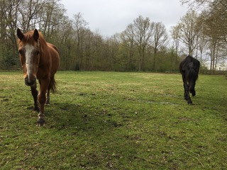

Over Karma had ik al iets verteld op de startpagina. Karma woont in het dorp achter het dorpshuis samen met
Yddiena. Yddiena is een Arabofries en heeft een andere eigenaar. Karma wordt 28 juni al 29 jaar! Hij is echt
stokoud en een echte lieverd. Ik heb hem al 22 jaar.
